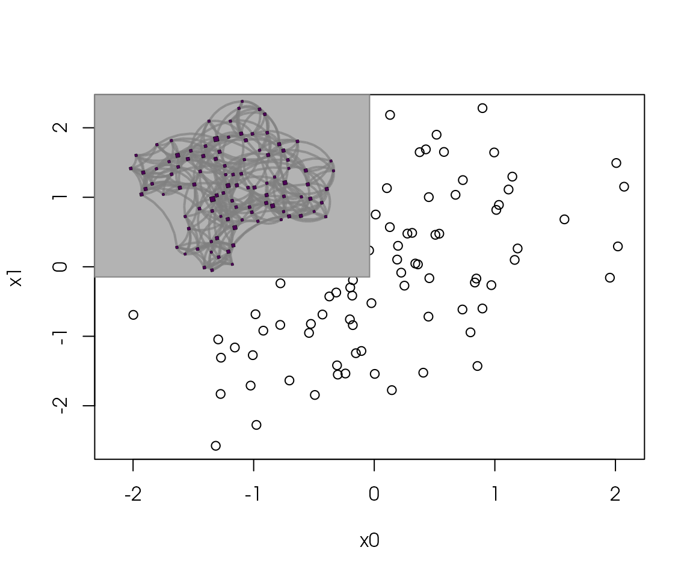
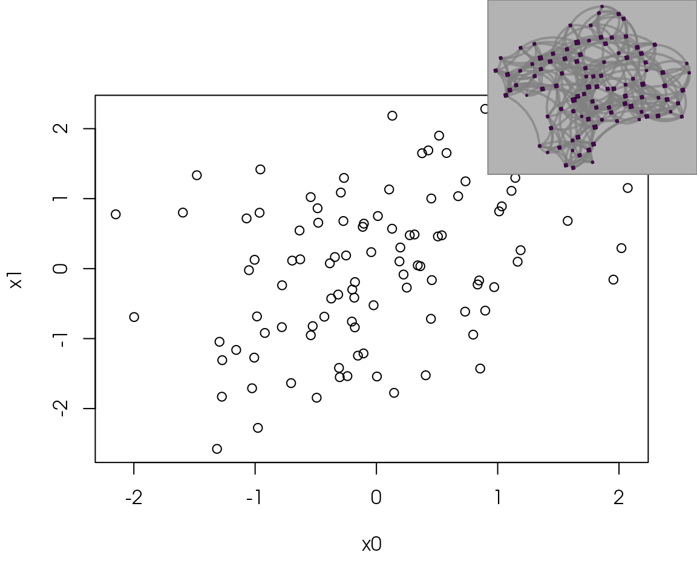
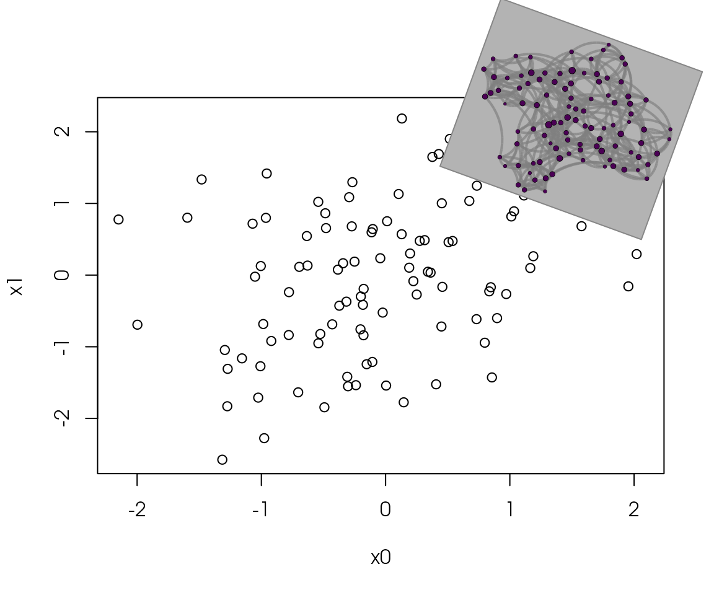

vignettes/base-and-grid.Rmd
base-and-grid.RmdWorking with grid graphics provides a lot of flexibility that it is simply harder to get when using base graphics. Nevertheless, a lot of users may still be more comfortable with base graphics, and so this document shows a few examples on how to mix both of them using the gridBase package.
First, we load igraph to simulate a small network and complement that with an uninteresting correlated data:
library(igraph)
# Simulation parameters
set.seed(12)
n <- 100
# Points
x0 <- rnorm(n)
x1 <- x0*.4 + rnorm(n)
# network
net <- sample_smallworld(1, n, 4, .1)And here we can create the netplot object, we use the magrittr package to make the workflow nicer:
## Loading required package: grid##
## Attaching package: 'netplot'## The following object is masked from 'package:igraph':
##
## ego
library(magrittr)
np <- nplot(net, bg.col = "gray70") %>%
set_edge_gpar("line", col = "gray50", alpha = .7) %>%
set_vertex_gpar("frame", fill = "black", col = "black")Imagine that we would like to include a plot of the network in the following plot
plot(x0, x1)To do this, we will use the gridBase that allows use do some interaction between base and grid graphics. In particular, we will use the baseViewports() function, which returns a list with viewports that can be mapped to match the current base plot
library(gridBase)
library(grid)
# Getting the current viewports
vp <- baseViewports() Once we have the viewports, we can work with these to add current plot to the base plot. In this case we will include the network that we just created, np, and this will be placed on the top left corner of the plot region and will occupy 1/4 of the area:
# Adding the plot to the current view
pushViewport(vp$plot)
# Sub viewport, topleft corner using 1/4 of the area
pushViewport(viewport(.25, .75, width = .5, height = .5))
# Drawing, we could have used `print(np, newpage=FALSE)`
grid.draw(np)Which yields

Or suppose that you actually want to frame it into a rectangle to the topright corner of the entire device that uses 3/10 x 3/10 of the area, then:
plot(x0, x1)
# vp <- baseViewports()
# pushViewport(vp$figure)
pushViewport(viewport(1, 1, just = c("right", "top"), width = .3, height = .3))
grid.draw(np)
Notice that we didn’t need to extract the viewports of the base plot. Since we are just using the entire device, a simple viewport did the job. Now, image that you are feeling playful and would like to draw it a bit tilted, say -20 degrees:
plot(x0, x1)
pushViewport(
viewport(x = .8, y = .8, width = .3, height = .3, angle = -20)
)
grid.draw(np)